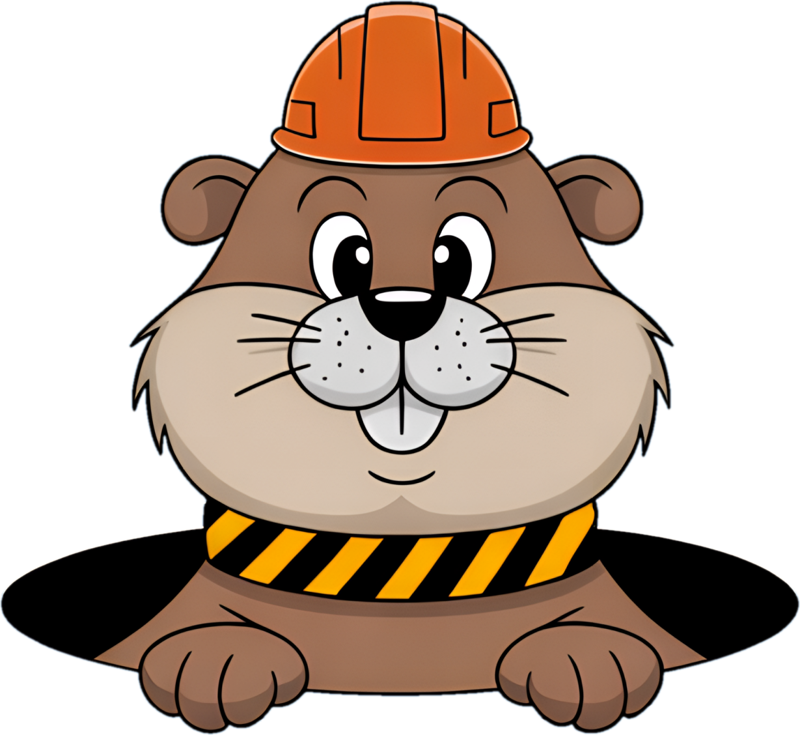

What this is
I'm a cloud engineer, not a software company. I have a lot of research and side projects going, and I use AI agents (mostly Claude Code) to help with them. I made Groundworks to make my own life easier on that work. It's a personal project, and I'm sharing it in case it's useful to someone else.
What I'm trying to fix
- Every new agent session forgets what the last one figured out, so the same lessons get re-learned.
- Agents sometimes say something is done or fixed before anything was actually run.
- Notes end up scattered across files, chats and tickets, and the next session can't find them.
The mascot is the foreman. He digs, keeps a ledger of what was found, and tapes off the dead ends so nobody falls in twice.

What works today
A small Rust program plus a Claude Code plugin, a local database next to my projects, and a few tools and habits for the agent.
A journal per project
Decisions, gotchas and dead ends get written down. Anything marked confirmed has to point at proof: a command that ran, or a quote from a file. Text that looks like a secret is refused.
Search over my projects
Files, docs and commits are indexed so the agent can look things up before re-deriving them. Quotes are checked against the source.
Receipts
Commands and build checks run through Groundworks and leave a record.
Hooks
A session starts with that project's notes, even in a git worktree. Risky shell commands and edits to Groundworks' own guard files are blocked. A session that changed things can't stop until it writes down what it learned.
Housekeeping
A supervisor keeps the database running, backs it up nightly and test-restores the backup. A short health report shows whether things are healthy, including work Groundworks didn't see.
Stays local
Your notes and data live in your own folder on your machine, never in the repo.
How it fits together
code, docs, commits
fact → evidence → source lines or a command receipt
hooks, tools, expert agents
A supervisor keeps the store running, exports it nightly, test-restores the export and writes a short health report. Each project's data sits in its own section of the database, and everything runs locally.
A few choices I made
There are plenty of good agent memory tools out there, and I'm not claiming this one is better. These choices fit how I work:
The database holds the line
"Confirmed" needs a link to real source, a command receipt, or my say-so. Without one, SurrealDB refuses the write.
A program checks quotes
A quote in an answer has to be found word for word in what the agent actually read.
Dead ends are kept
Ruled-out approaches are written down with the reason, so they don't get re-tried.
Kept simple
One local program and one local database. No cloud service, and no AI model inside Groundworks.
Roadmap
Now
A Groundworks desktop app: a copy of Nimbalyst with Groundworks built into every session. It's private while in progress, and its first public release is being prepared.
Next
"Check your notes first" made automatic, a smaller tool set per session, alerts when something stops working, an undoable way to remove a project, and picking up a project's own Claude Code agents, skills and notes when it's added.
Later
Sandboxed sessions, and a side-by-side check against plain Claude Code.
Try it
You need Rust (stable, via rustup), SurrealDB 3.x on your PATH (built and tested on 3.1.6), Git, and Claude Code.
# 1. Build the program cargo install --path rust/crates/gw-mcp --locked # 2. Make a home folder next to your projects mkdir -p ~/projects/.groundworks echo 'workspace = "/home/you/projects"' > ~/projects/.groundworks/groundworks.toml # 3. Start the store and create your owner login, once # (type the password yourself; Groundworks never stores it) export GROUNDWORKS_OWNER_PASS=... cd ~/projects && groundworks store init unset GROUNDWORKS_OWNER_PASS groundworks store supervise & # keep it running, nightly export, restore drill # 4. Add the plugin to Claude Code claude plugin marketplace add <path to the repository> claude plugin install groundworks@groundworks # 5. Check it groundworks selftest groundworks doctor
On Windows, groundworks store install runs the supervisor as a logon task instead. Then open one of your projects in Claude Code and run /groundworks:init.
Thanks
- Nimbalyst (MIT): the base of the desktop app.
- Claude Code: the plugins and hooks Groundworks plugs into.
- Model Context Protocol and its Rust SDK: how the tools are served.
- SurrealDB: the database underneath.
- Council of High Intelligence (MIT): ideas for the expert panels.
- Copier and uv: the project templates.
- autoresearch and Recursive Language Models: ideas I learned from.
- The Rust crates in THIRD_PARTY_NOTICES.md. The logo was made with Ideogram and Recraft.